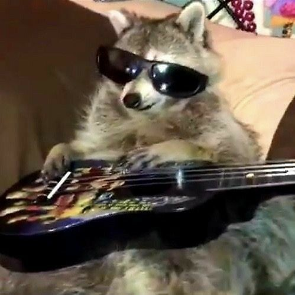
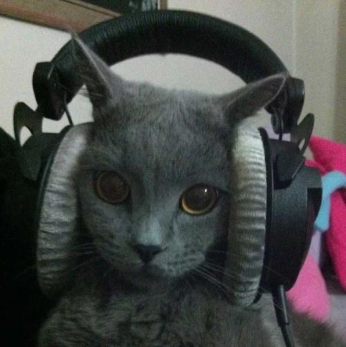
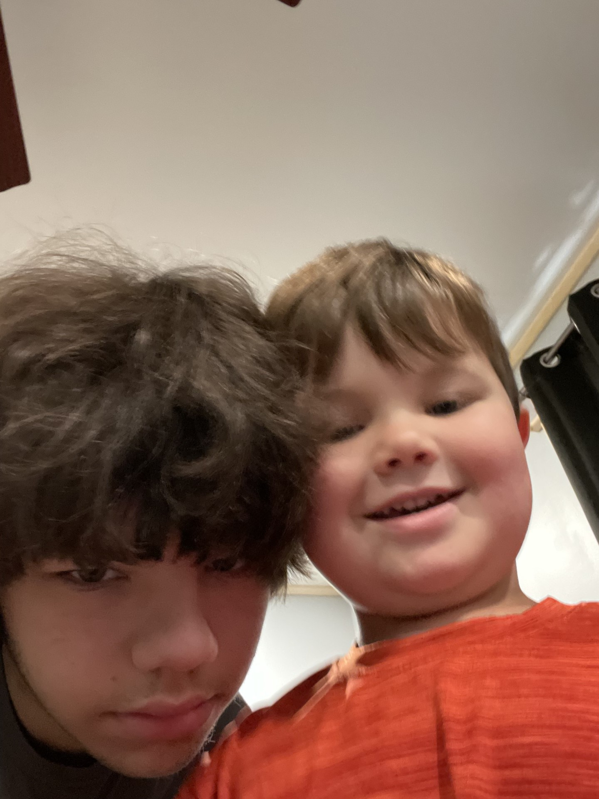

I've lived in NY all my life, the farthest I have travelled away from home is to Miami. I've only travelled to a different country once, and it was to Canada on a field trip.

favorite album, Teen Week by Jane Remover
I LOVE MUSIC
favorite genres and bands
- Rock - Slipknot, S.O.A.D, Weezer
- Rap - Kanye West, Lil Uzi Vert, XXXTENTACTION
- Pop - They Might Be Giants, Jack Stauber, Lemon Demon

My favorite animal is raccoons, they're just tiny pandas but they eat garbage. They're pretty cool.

I like cats a lot! They are the only animal that comes close to my favorite.
I used to have cats before we had my youngest brother. They kept me company and aren't all up in your face like dogs are. I like how reserve cats are as pets.
They also are really nice to have around when mice get into the house. Or when you just want to watch a movie with someone.

I have 2 brothers, i'm the oldest out of us

An image of my room!
I have a few hobbies such as:
- Drawing
- Listening to music
- Cooking
- Playing games with my friends
- Badminton
- Sleeping (my favorite while listening to music)
Currently I am going to boces for certification ivolved with software development. This is my notebook for boces. This includes everything we are going to learn about HTML, CSS, and Javascript.